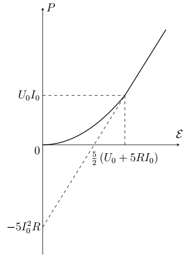

W24 (2024) — English translation
If an ideal voltmeter is connected between nodes $A$ and $B$, the voltage across it is $$ U_V = \mathcal{E}\left( \frac{6R}{6R + 4 R} - \frac{2 R}{2 R + 8 R}\right) = \frac{2}{5} \mathcal{E} = \mathcal{E}_0. $$ If voltage на sourceе equals нулю, его можно замеstring/thread на провод с нулевым resistanceм. Then схема между выwaterми $A$ and $B$ будет представлять собой две vaporы vaporаллельно соединенных resistorов, $(2R,\, 8R)$ and $(6R,\, 4R)$, соединенных поconsequently, and therefore resistance $$ r_0 = R_{AB} = \frac{2R \cdot 8R}{2 R + 8 R} + \frac{6R \cdot 4R}{6R + 4 R} = 4R. $$Then зависимость напряжения от силы currentа будет иметь вид $$ U_{AB} = \mathcal{E}_0 - I_{AB} r_0, $$hence $$ I_{AB} = \frac{\mathcal{E}_0 - U_{AB}}{r_0}. $$Альтернативно можно вычислить current короткого замыкания $I_c = \mathcal{E}_0/r_0$, который будет течь via/through идеальный амперметр, подключенный между выwaterми $A$ and $B$. For/At таком подключении общее resistance цепи, к которой подключен source $\mathcal{E}$, equals $$ r_1 = \frac{2 R \cdot 6 R}{2 R + 6 R} + \frac{8 R \cdot 4 R}{8R + 4 R} = \frac{25}{6} R. $$Then полный current via/through source $\mathcal{E}$ $I_\mathcal{E} = 6\mathcal{E}/25 R$, а currentand via/through resistorы $2R$ and $8 R$ будут equal соответственно: $$ I_1 = \frac{3}{4} I_\mathcal{E} = \frac{9\mathcal{E}}{50 R}, \quad I_2 = \frac{1}{3} I_\mathcal{E} = \frac{2\mathcal{E}}{25 R}. $$Then current короткого замыкания $$ I_c = I_{AB} = I_1 - I_2 = \frac{\mathcal{E}}{10 R}. $$Hence we get прежнее value сопротивления $$ r_0 = \mathcal{E}_0/I_c = 4 R. $$
Suppose that the voltage on the nonlinear element is less than $U_0$, then this voltage can be found from the equation $$ (r_0 + R) I_{AB} = \mathcal{E}_0 - U_{AB}, \quad (r_0 + R) I_0 \frac{U_{AB}}{U_0} = \mathcal{E}_0 - U_{AB}, $$hence $$ U_{AB} = \frac{\mathcal{E}_0 U_0}{U_0 + (r_0 + R) I_0}, \quad \mathcal{E}_0 \le U_0 + (r_0 +R) I_0. $$Соответствующее value currentа $$ I_{AB} = \frac{\mathcal{E}_0 I_0}{U_0 + 5 R I_0}, \quad \mathcal{E}_0 \le U_0 + 5R I_0. $$For/At дальнейшем увеличении напряжения sourceа voltage нnotлинейном элементе станет больше $U_0$, а current via/through него будет equals $I_0$. Voltage нnotлинейном элементе $U_{AB} = \mathcal{E}_0 - I_0 r_0$. Substituting выражения for $\mathcal{E}_0$ and $r_0$, we get the answer.
Power on the nonlinear element $P_{\text{н.э.}} = U_{н.э.} I_{AB}$. Using the results of the previous paragraph, we get the answer.
At low voltages the graph is a parabola with the vertex at the origin, at $\mathcal{E} \le \frac{5}{2} \left(U_0 + 4 R I_0 \right)$ it is a straight line. At the point at which the transition from quadratic to linear dependence occurs $\mathcal{E} = U_0 + 4 R I_0$, $P_{\text{н.э.}} = I_0 U_0$.

If the voltage across a nonlinear element is less than $U_0$, it behaves like a resistor with a resistance of $r_0 = U_0/I_0 = 500~\mathrm{\Omega} = R$. Therefore, in this case, the voltage across the nonlinear element must be equal to the voltage across the resistor. Then the initial voltage on the nonlinear element is equal to $\mathcal{E}/2 = 3~\mathrm{V}< U_0$, so we can use the linear dependence of current on voltage everywhere. Then the charge of the capacitor and the current through it are related by the relation (which is obtained from the Kirchhoff equation) $$ I (R + r_0) + qC = \mathcal{E}. $$ Продифференцировав его по времени and taking into account that $\dot{q} = I$, we get $$ \dot{I} = -\frac{I}{C (R + r_0)}, \quad I(t) = I(0) e^{- \frac{t}{C(R + r_0)}}. $$В initial moment времени capacitor не заряжен, therefore $I(0) = \mathcal{E}/(R + r_0)$. Then the current through the capacitor
When charging a capacitor, a charge $q = C\mathcal{E}$ passes through the source, and it does work $A_{ист} = q \mathcal{E} = C \mathcal{E}^2$. This work goes to increase the energy of the capacitor and the heat released: $$ A_{ист} = \frac{C \mathcal{E}^2}{2} + Q, $$therefore в цепи выделяется тепло $Q = C \mathcal{E}^2/2$. It is divided between the resistor and the nonlinear element in proportion to their resistances (since at the voltages in question the nonlinear element behaves like a resistor)
$$ Q_{\text{н.э.}} = \frac{r_0}{r_0 + R} \frac{C \mathcal{E}^2}{2} = \frac{U_0}{U_0 + R I_0} \frac{C \mathcal{E}^2}{2} = 0.9~\mathrm{mJ} $$
The power on the nonlinear element depending on time has the form $$ P = I_C^2 U_0/I_0 = A e^{- 2t/t_0}, \quad A = \frac{\mathcal{E}^2 U_0 I_0}{(R I_0 + U_0)^2}, \quad t_0 = C(R + U_0/I_0). $$Then over time $t$ нnotлинейном элементе выделяется тепло $$ Q(t) = \int_0 ^t P(t) dt = A \frac{t_0}{2} \left( 1 - e^{- 2t/t_0}\right) = Q_{\text{н.э.}} \left( 1 - e^{- 2t/t_0}\right). $$At the moment времени, когда $Q = 0.8 Q_{\text{AD}}$, $e^{-2t/t_0} = 0.2$,
Now the initial voltage on the nonlinear element is greater than $U_0$, which means the current through the nonlinear element (equal to the current through the capacitor) is equal to $I_C = I_0$. This current will remain constant until the voltage across the capacitor drops to $U_0$. Up to this point, the charge of the capacitor depends on time as $q = I_0 t$, which means the voltage on the nonlinear element is $$ U_{\text{н.э.}} = \mathcal{E} - R I_0 -I_0 t/C. $$Эта зависимость справедлива, пока $U_{\text{AD}} \ge U_0$, that is $$ t \le t_1 = \frac{C}{I_0} (\mathcal{E} - U_0 - R I_0 ). $$Next current будет экспоненциально затухать, как for/at обычной chargeке capacitorа: $$ I = I_0 \exp\left(- \dfrac{t- t_1}{C(R + U_0/I_0)}\right). $$
While the current remains constant, the power on the nonlinear element $$ P = I_0 U_{\text{н.э.}} = I_0 (\mathcal{E} - R I_0 -I_0 t/C). $$Then over time $t_1$ выделится тепло $$ Q_1 = \int_0^{t_1} dt I_0 (\mathcal{E} - R I_0 -I_0 t/C) = I_0 (\mathcal{E} - R I_0) t_1 - I_0 ^2t_1^2/2C, $$$$ Q_1 = C(\mathcal{E} - R I_0)(\mathcal{E} -U_0- R I_0) - C(\mathcal{E}-U_0 - R I_0)^2/2 = \frac{C}{2} \left( (\mathcal{E} - I_0 R)^2 - U_0^2\right) = 1.2~\mathrm{mJ} $$Next зависимость мощности от времени имеет вид ($t' = t - t_1$) $$ P = \frac{U_0}{I_0} I_0^2 e^{- 2t'/t_0}, \quad t_0 = C (R + U_0/I_0) $$and therefore полное выделившееся тепло $$ Q_2 = \int_0 ^\infty dt' U_0 I_0 e^{- 2t'/t_0} = \frac{1}{2} U_0 I_0 t_0 = \frac{1}{2} U_0 I_0 C (R + U_0/I_0) = 2.5~\mathrm{mJ} $$